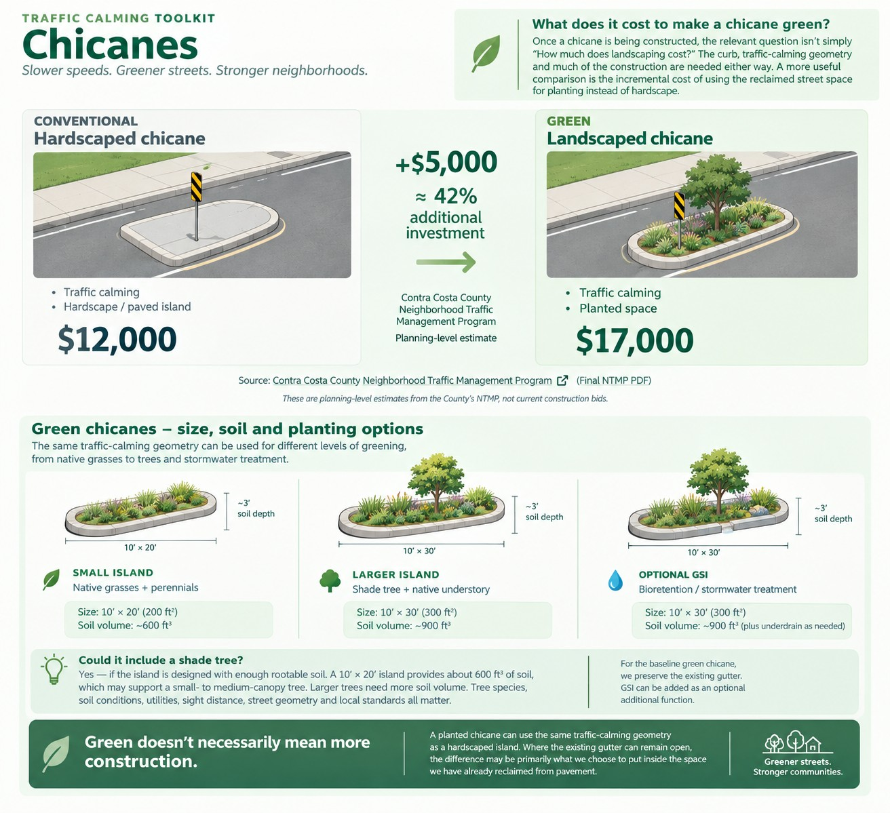

Design Toolkit
Design streets for slower speeds — and use the space we reclaim to make them greener.
Traffic calming uses the physical design of a street to reduce vehicle speeds, discourage cut-through traffic, and make walking, bicycling and neighborhood streets safer and more comfortable.
Instead of relying only on signs, enforcement or asking people to drive more slowly, traffic calming changes the street itself — its width, geometry, elevation, vehicle path or access.
Examples include chicanes, pinch points, traffic circles, curb extensions, raised crossings, diverters and modal filters.
The street becomes the traffic calming.
Traffic calming describes what the street design is trying to do.
Rapid Delivery describes how a treatment can be delivered.
A chicane, for example, could be tested quickly with modular materials and later constructed as a permanent landscaped island. The traffic-calming function — shifting the vehicle path to reduce comfortable driving speeds — remains the same.
Explore Rapid Delivery: Interim Treatments →Traffic calming creates space. What else can that space do?
When a project narrows a street, redirects traffic or changes an intersection, it often creates space that no longer needs to be pavement.
Instead of automatically filling that space with concrete, start by asking whether it could support:
Green Complete Streets principle
Reclaim the pavement.
Slow the street.
Use the space for something better.
A chicane uses alternating curb extensions or islands to shift the vehicle path from side to side. The horizontal deflection reduces the speed at which drivers can comfortably travel along a straight street.
Those islands can be hardscaped — or they can become planted spaces.

Contra Costa County’s Neighborhood Traffic Management Program estimated a typical hardscaped chicane at $12,000 and a landscaped chicane at $17,000.
That is a $5,000 — approximately 42% — difference in the County’s planning-level estimate.
The comparison is useful because much of the infrastructure is needed either way. The street geometry and traffic-calming function do not disappear when the island is planted. The additional investment turns reclaimed roadway into planted space instead of additional hardscape.
These are planning-level estimates from the County’s Neighborhood Traffic Management Program, not current construction bids. Source: Contra Costa County Neighborhood Traffic Management Program.
A planted chicane can use the same traffic-calming geometry as a hardscaped island.
Where feasible, a floating island can also leave the existing gutter open between the island and the existing curb. That can allow runoff to continue along its existing path rather than automatically requiring the curb and drainage system to be reconstructed.
Drainage, utilities, emergency access, sight distance, turning movements, bicycle routing, maintenance and local design standards still need to be evaluated for each location.
Native grasses + perennials.
Shade tree + native understory.
Tree canopy depends on usable rootable soil volume, not simply the size of the visible tree opening. Larger-maturing trees generally need more connected soil volume.
Bioretention / stormwater treatment. Size and engineered soil/storage volume are site-specific.
A green traffic-calming island does not have to manage stormwater to be green. GSI can be added where site conditions, drainage and project goals make it appropriate.
Chicanes Pinch points / chokers Traffic circles Curb extensions Raised crossings Diverters Modal filters Median / refuge islands
Each treatment solves a different street-design problem. This toolkit will compare how they work, where they fit, green design options, Rapid Delivery approaches, costs and trade-offs.